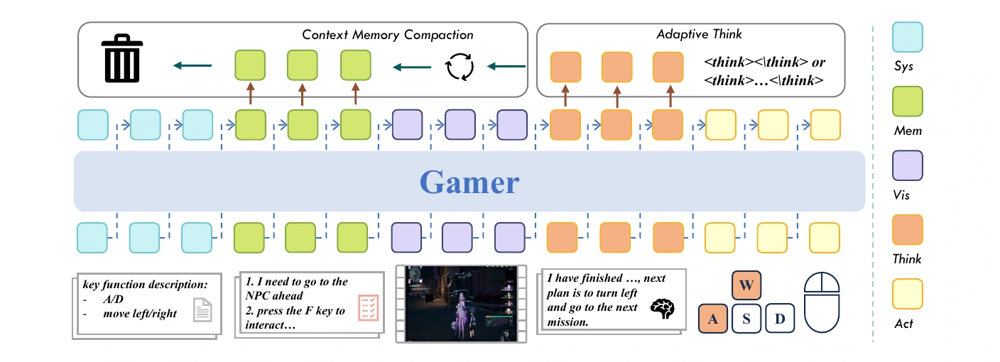
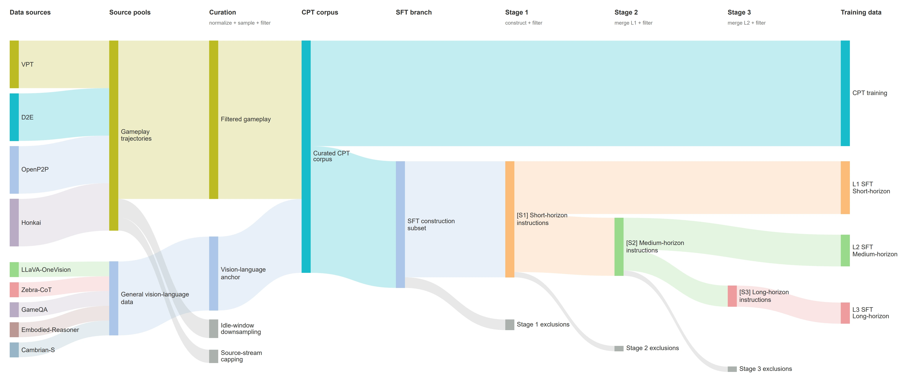
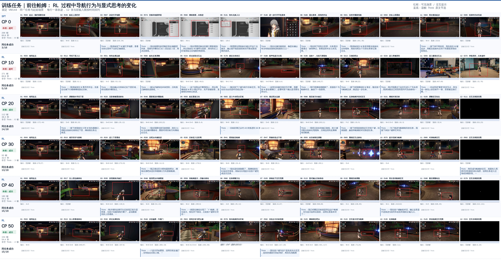

Screen observations
Screenshots sampled at 5 Hz.
Gamer maps screen observations to keyboard and mouse actions, powered by an optimized inference engine for real-time interaction.
Screenshots sampled at 5 Hz.
Conditioned on the task, observation history, and memory.
Keyboard and mouse button states, mouse movement, and scrolling.
Continued pre-training learns transferable control skills from over 10K hours of gameplay with aligned screen observations and keyboard and mouse actions.
CPT details SFTInstruction tuning adds task supervision at the operation, subgoal, and task levels, with sparse reasoning and persistent memory.
SFT details RLTA-GRPO optimizes memory-linked trajectories using environment-verified rewards. Streaming-vLLM serves the real-time rollouts.
RL detailsPersistent KV caching and early action dispatch reduce inference latency for parallel RL rollouts and deployment.
Watch Gamer navigate, interact, and complete quests in Honkai: Star Rail.
Chapter highlights
Minigame recordings
Gamer tackles five puzzle types in Honkai: Star Rail using the same keyboard-and-mouse interface, combining logical and spatial reasoning with temporal planning and precise timing.
Stage I CPT
CPT adapts a pretrained multimodal model to a unified keyboard-and-mouse interface. From screen observations sampled at 5 Hz, the model predicts a mouse displacement and six consecutive 33 ms key-state blocks per 200 ms interval, enabling 30 Hz control without a separate action head.
Repeated key states encode how long actions are held but dominate token-level supervision. Weighting the n-th consecutive repetition by γn−1 places greater emphasis on action transitions while preserving hold duration.
Bars show loss weights for a 15-step action sequence. At γ = 1.0, repetitions have equal weight; lower values increase the relative weight of transitions.
For each trajectory, a random one-to-one mapping consistently remaps rebindable keys in both the control specification and action labels, encouraging the model to learn key functions rather than key identities.
"A/D: move left/right" becomes "D/A: move left/right" for this trajectory.
Stage II SFT
SFT teaches the policy to follow task instructions, reason explicitly at key decision points, and preserve task progress through memory summaries as older interactions leave the active context.

Memory retains completed objectives, failed attempts, important locations, resources, and remaining plans.
The policy generates reasoning at route changes, target switches, new interaction prompts, and task transitions.
Memory updates remain part of the observation–reasoning–action sequence.
SFT data construction
Aligned videos and device events are annotated at the operation, subgoal, and task levels. Annotations include sparse reasoning at decision points and timestamped memory summaries.

Stage III RL
Temporal-Aware GRPO optimizes memory-linked rollout segments using environment-verified rewards, without a value critic or learned reward model. Streaming-vLLM serves parallel rollouts under the real-time execution protocol.

Real-time feedback during training
Across all eight navigation tasks, real-time rollouts achieve higher final rewards than the 0.6-FPS baseline under the same training-step budget.
Generalization across puzzle types
Gamer-RL achieves a 49.7% macro-average success rate across seven puzzle types, improving on Gamer-SFT’s 39.2% by 10.5 percentage points. Both models successfully solve tasks in every type, while the strongest general-purpose baseline reaches 17.1%. The macro-average weights all seven puzzle types equally.
Real-time training and deployment
Streaming-vLLM reuses each client’s KV cache across turns, accelerates inference with architecture-specific kernels, and dispatches verified action blocks before decoding finishes. Together, these optimizations reduce end-to-end request latency from 1,306 ms to 65.12 ms on the H200 MoE workload.
1,306 → 65.12 ms
End-to-end request latency
Time-paused and real-time evaluation
Time-paused (TP) evaluation freezes the environment during inference, while real-time (RT) evaluation keeps it running. Paired recordings show the same policy performing the same task under both protocols, covering eight tasks across four benchmarks. Clips illustrate representative runs; bars show mean results across runs, with MCU scores reported as successful attempts out of five.
General benchmark results
We evaluate our policies on MCU, ViZDoom, OmniGameArena, and GameWorld under both time-paused and real-time protocols. Moving to real-time evaluation lowers average scores by 17–35 percentage points for the evaluated general-purpose models, while Gamer-35B-A3B-CPT improves by 3.4 percentage points.
Gamer is a research project exploring generalist agents in interactive environments. We share experimental methods, results, and gameplay demonstrations for academic communication and evaluation. Potential applications include game testing, accessibility, and human–AI interaction research.
We advocate responsible research and use that respect privacy, intellectual property, applicable laws, and platform rules. We do not endorse using Gamer for cheating, unauthorized access, exploiting security vulnerabilities, or activities that harm users or undermine fair play.
Our results are limited to the evaluated research settings. Any use beyond these settings requires appropriate authorization, independent assessment of safety and reliability, and human oversight suited to the application.
@misc{gamer,
title = {Gamer: A Generalist Vision-Language-Action Foundation Model for Long-Horizon, Real-Time Game Agents},
author = {Luo, Run and Zhang, Kuan and Deng, Qi and Chen, Yukun and Yang, Zhihao and Zhang, Yufei and Hu, Renrong and Zhang, Yi and Zheng, Yinhe and Xia, Xiaobo and Jiang, Dawei and Ren, Shaoqing},
year = {2026}
}